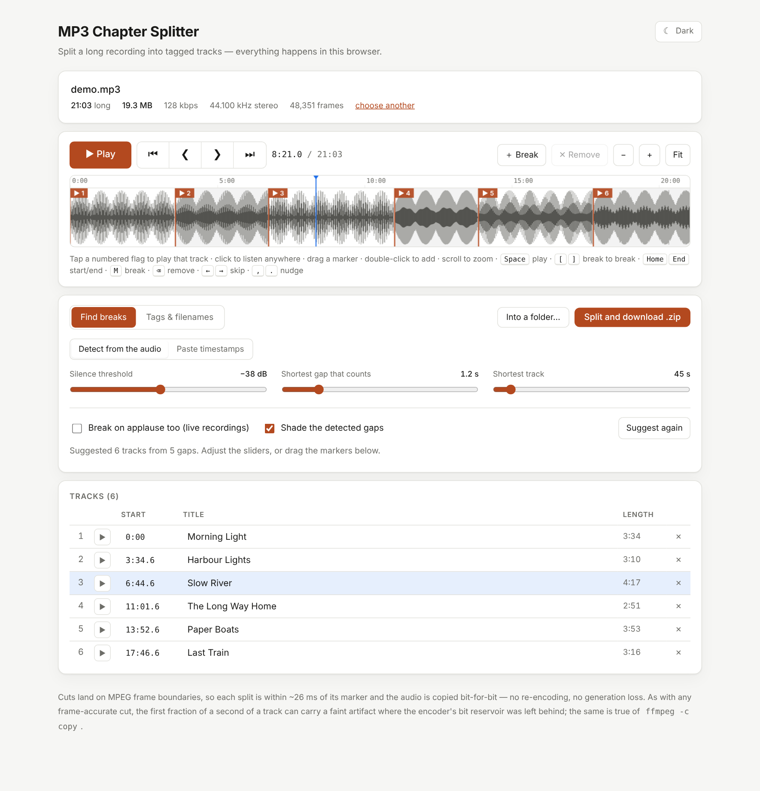

MP3 Chapter Splitter
Split one long MP3 — a concert, a DJ set, a whole album in a single file — into separate, tagged tracks. It runs entirely in your browser, so nothing is uploaded.
Open the splitter →User manual · Source on GitHub · MIT licence

A 21-minute recording, split into six tracks. The numbered flags play when tapped and can be dragged.
- Finds the breaks for youListens for quiet gaps, or for applause on live recordings. Or paste a YouTube-style timestamp list.
- LosslessAudio is copied, never re-encoded. Cuts land within about 26 ms of your markers.
- Tagged and namedID3 tags, track numbers, a style picker and clean filenames, delivered as a ZIP.
- PrivateNo upload, no account, no network requests. Works offline once you have the file.